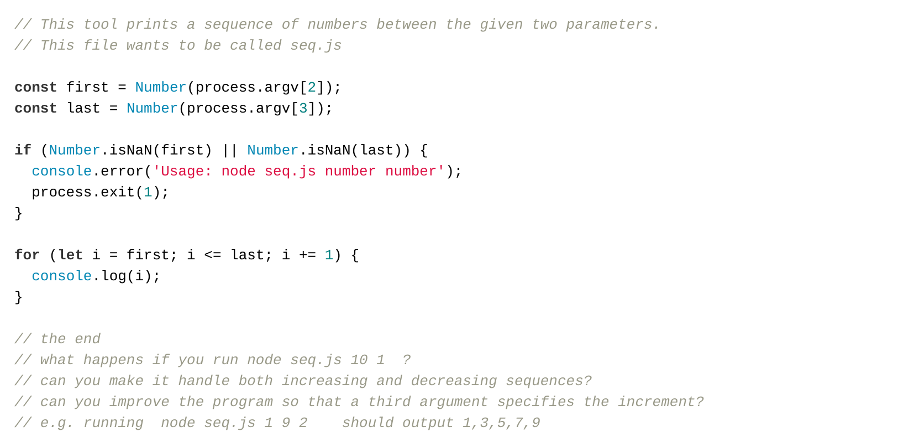
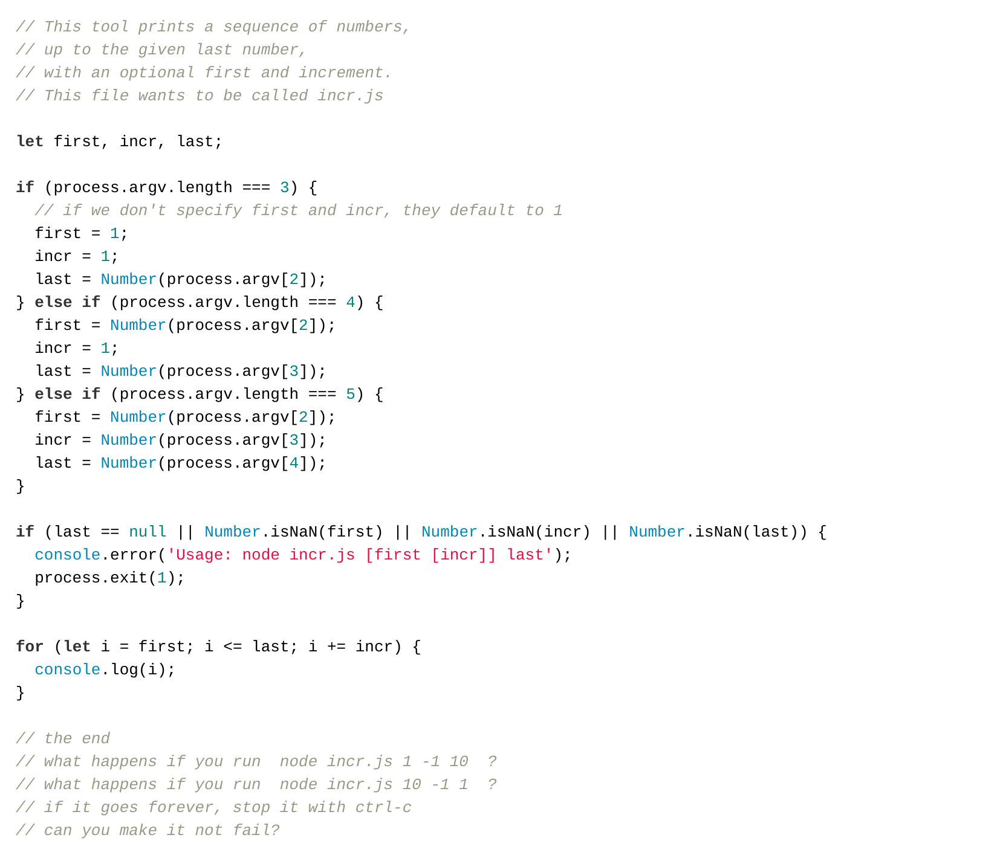
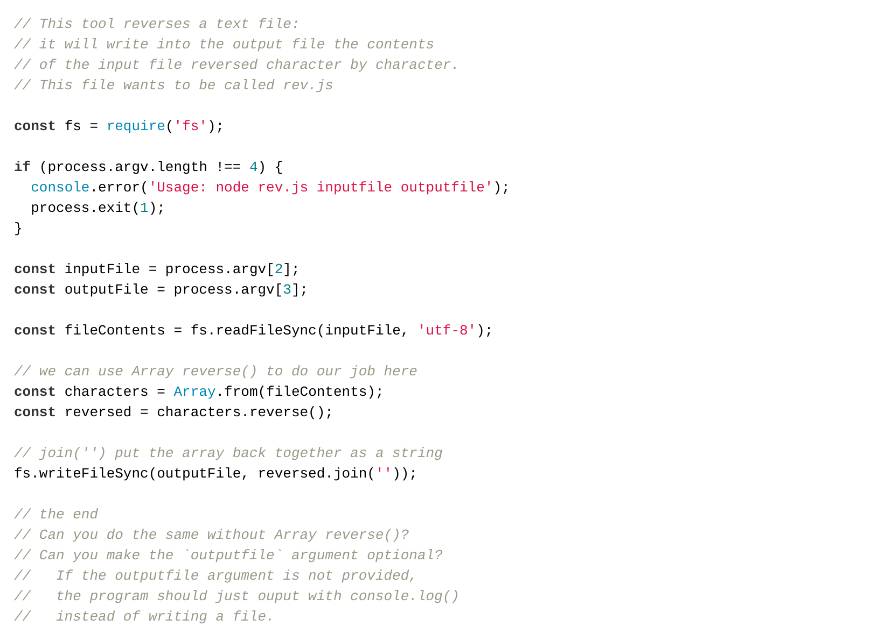
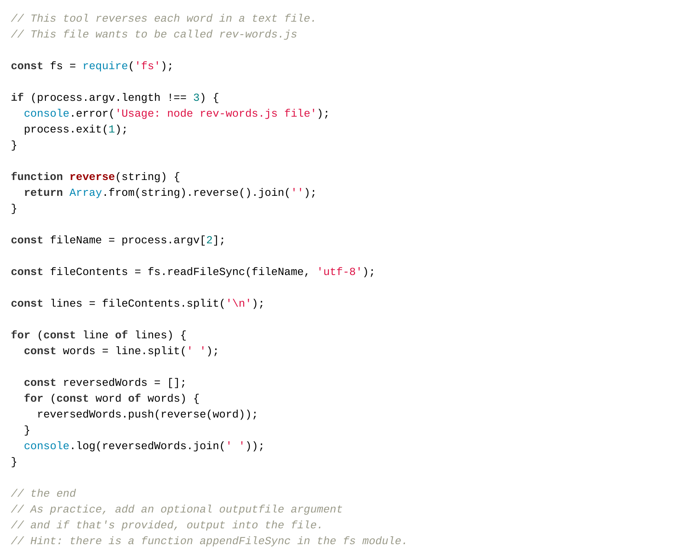

You are not registered and cannot track your progress
This page has code examples for you to try out. In this stage, we add functions and one more external package.
Typing code helps you learn, so rather than giving you text to copy and paste the code is an image that you must read, hold in your mind, type in to your editor and then manually check for accuracy.
When we type, we make mistakes and that's OK – finding what we've done wrong is part of programming so this is a useful experience.
Always test your program with a few different inputs to see that it behaves as expected.
As always, we encourage your feedback on the process and the examples.
This tool prints out a sequence of numbers. It is a simple tool but you'll see (when you come to do cloud computing in your final year) that it is surprisingly useful.
This tool has optional command-line arguments: you can specify the last number, the first and last number, or three numbers: first, increment, last. It shows dealing with optional parameters.
This tool reads from a file and writes the reversed contents into another file.
This tool includes array manipulation to reverse the characters in each word within a file, whilst maintaining the original order of the words.
